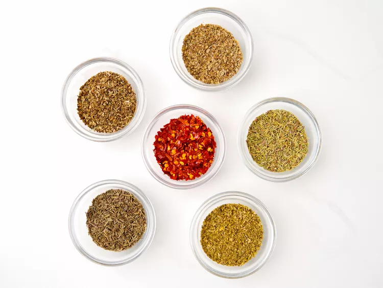

This Italian seasoning blend is easy and quick to throw together. This is an excellent recipe for all your Italian seasoning needs. I like to use it for just about everything, Italian or not. Stored in an airtight container, it keeps for about 12 weeks. You can use fresh herbs you dry yourself, or store-bought dried herbs — of course, the ones you grow and dry yourself are better!
